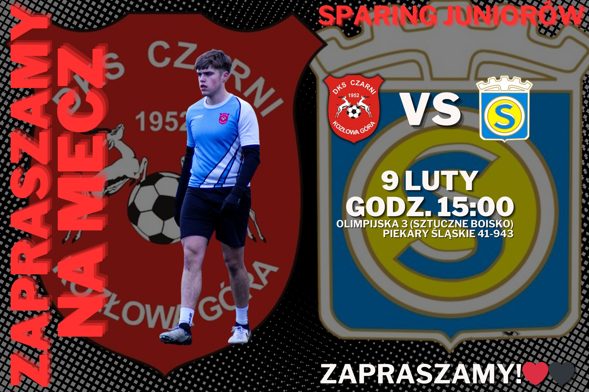
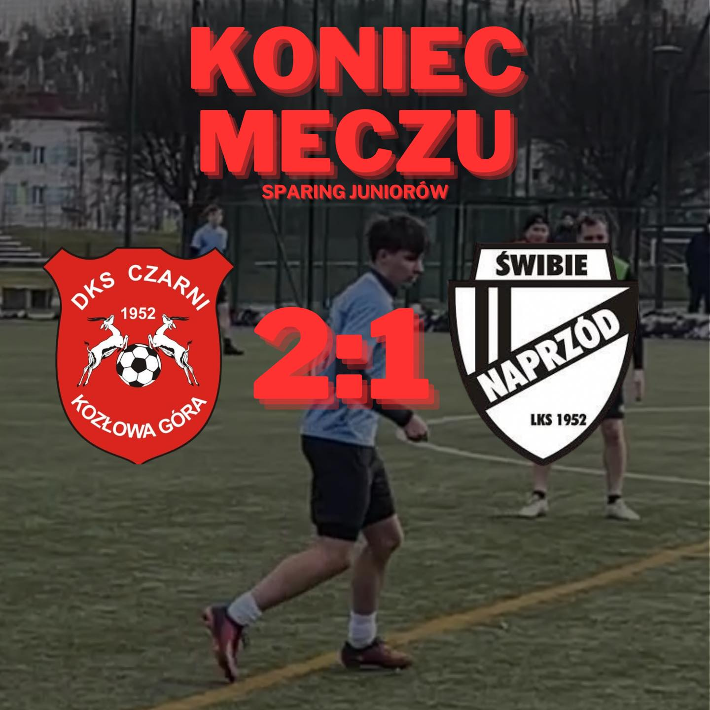
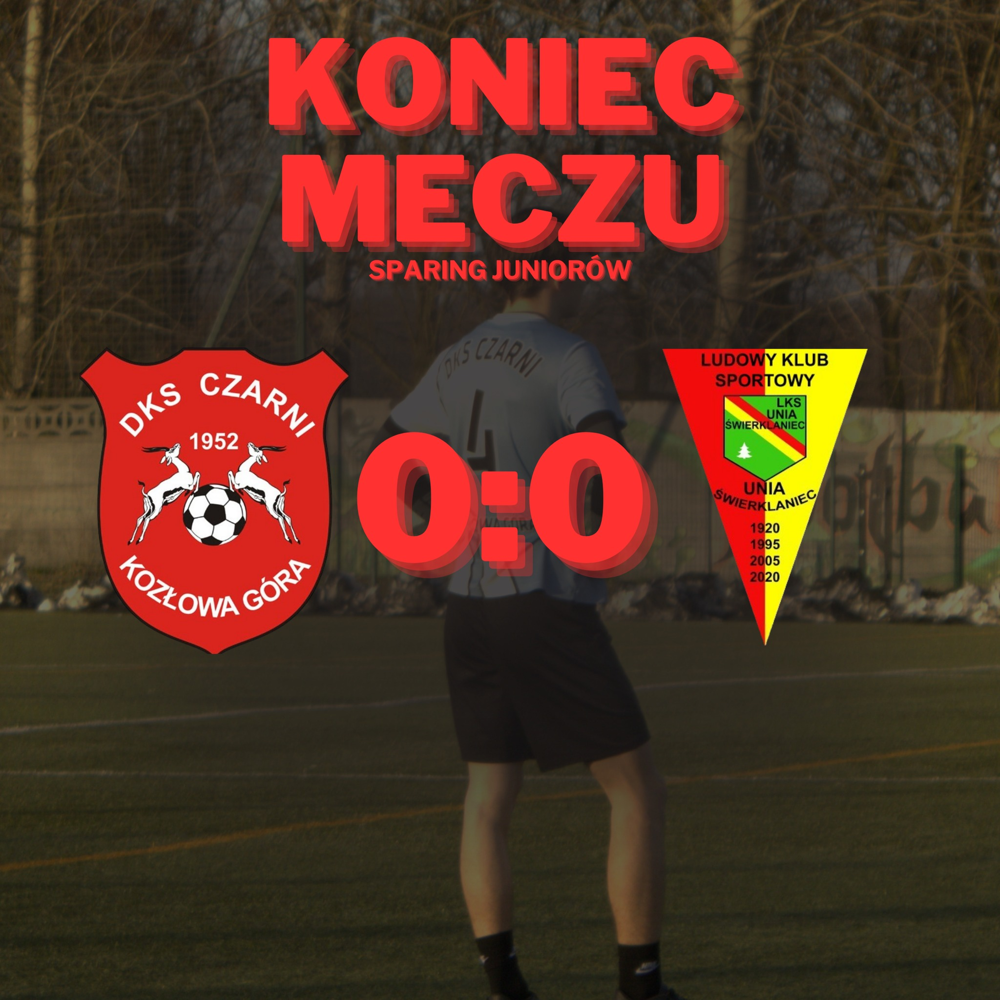
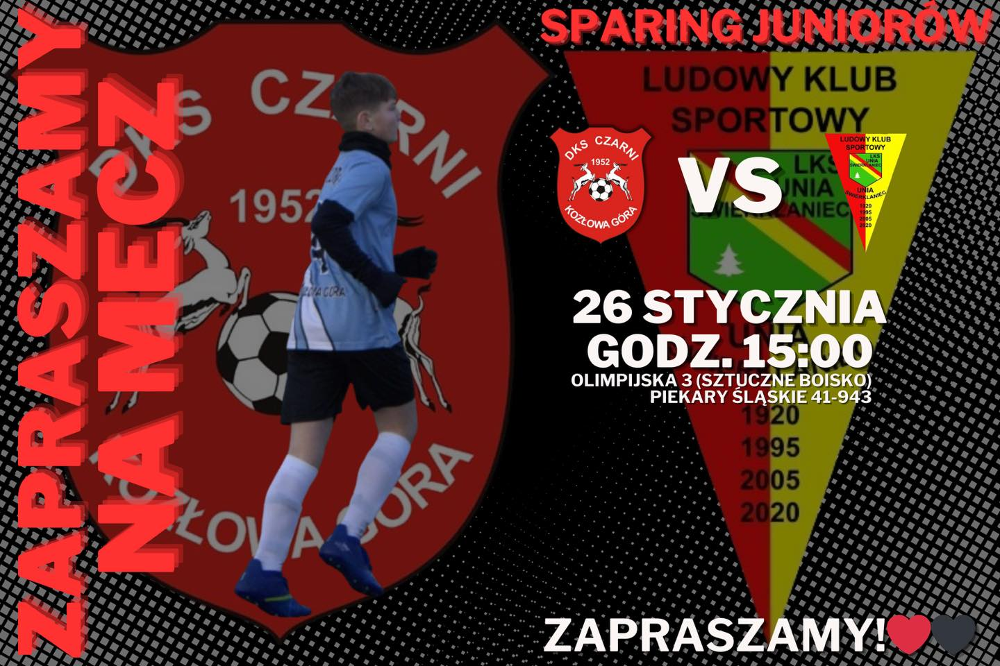
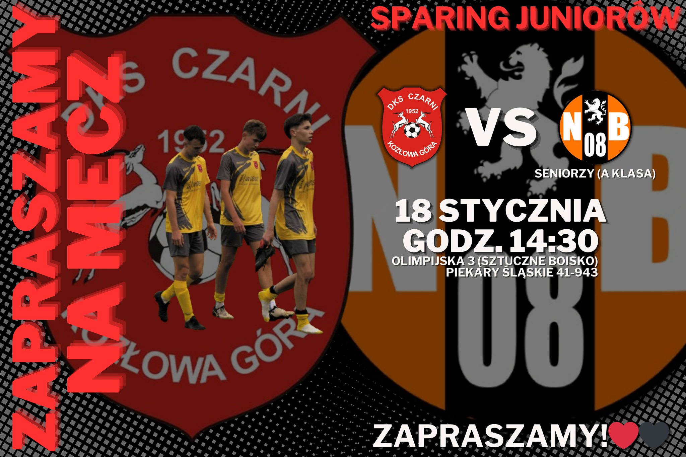

Przegrana juniorów
Przegrana w sparingu juniorów ze Stalą Zabrze.
Bramki:
0:1 Stal
1:1 Szymon Białach
1:2 Stal
1:3 Stal
1:4 Stal
2:4 Mateusz Materna (as. Szymon Białach)
Skład:
Paweł Olędzki
Jasiu Niewiadomski
Oliwier Włodarczyk
Kacper Dyszy
Miłosz Klimczok
Jakub Maciejewski
Szymon Białach
Olek Cichy
Jakub Skowronek
Mateusz Materna
Szymon Guła
Paweł Hanzel
Seweryn Dikta
Wiktor Zięba
Szymon Nierada
Daniel Rosa

❤️🖤❤️🖤
Sparing juniorów
⚽️ Zapraszamy na sparing juniorów
❤️🖤DKS Czarni Kozłowa Góra - Stal Zabrze
🏆Sparing juniorów
🏟️Ul. Olimpijska 3 (sztuczne boisko) Piekary Śląskie 41-943
🕠15:00
❤️🖤
❤️🖤❤️🖤
Bramki z meczu przeciwko Naprzód Świbie
Oto bramki z dzisiejszego sparingu juniorów, w którym zmierzyli się z seniorską drużyną Naprzód Świbie.
❤️🖤❤️🖤
Wygrana juniorów
Wygrana juniorów w sparingu z seniorami z Zabrzańskiej klasy B - Naprzód Świbie.
Bramki:
0:1 Zawodnik przeciwników
1:1 Jakub Skowronek (as. Mateusz Materna)
2:1 Jakub Skowronek (as. Seweryn Dikta)
Skład:
Paweł Olędzki
Kacper Janus
Kacper Dyszy
Miłosz Klimczok
Jasiu Niewiadomski
Kuba Maciejewski
Mateusz Materna
Olek Cichy
Wiktor Zięba
Jakub Skowronek
Daniel Rosa
Szymon Białach
Seweryn Dikta
Oskar Sowa
Zawodnik testowany
Zawodnik testowany nr2
❤️🖤❤️🖤
Sparing juniorów
Juniorzy bezbramkowo remisują w sparingu przeciwko Unii Świerklaniec.
🏆 Sparing nr 3 juniorów
⚽️ DKS Czarni KG 🆚 Naprzód Świbie (seniorzy B Klasa)
🏟 MOSiR Piekary Śląskie
📆 02.02 niedziela
🕒 15.00
Zapraszamy❗️❗️❗️
❤️🖤❤️🖤
Remis z Unią Świerklaniec!
Juniorzy bezbramkowo remisują w sparingu przeciwko Unii Świerklaniec.
Skład:
Jasiu Niewiadomski
Kacper Janus
Mateusz Materna
Miłosz Klimczok
Olek Cichy
Oliwier Włodarczyk
Oskar Sowa
Oskar Trojanowski
Paweł Hanzel
Piotr Szastok
Seweryn Dikta
Zawodnik testowany
Szymon Strzoda
Wiktor Zięba
Jakub Skowronek
Kuba Maciejewski
Filip Pyrkosz
Filip Górecki
Daniel Rosa
Szymon Guła
Paweł Olędzki
❤️🖤❤️🖤
Sparing juniorów
⚽️ Zapraszamy na mecz
❤️🖤DKS Czarni Kozłowa Góra - LKS Unia Świerklaniec
🏆Sparing juniorów
🏟️Ul. Olimpijska 3 (sztuczne boisko) Piekary Śląskie 41-943
🕠15:00
❤️🖤❤️🖤
Sparing juniorów
Remis Naszych juniorów w pierwszym zimowym sparingu!
DKS Czarni - Nadzieja Bytom(seniorzy A klasa) 2:2
0:1 Nadzieja
1:1 Mateusz Materna as Jakub Maciejewski
2:1 Szymon Białach as Mateusz Materna
2:2 Nadzieja
Skład drużyny:
Mateusz Szastok
Zawodnik testowany
Szymon Białach
Olek Cichy
Kacper Dyszy
Filip Górecki
Miłosz Klimczok
Filip Korkus
Kuba Maciejewski
Mateusz Materna
Jasiu Niewiadomski
Paweł Olędzki
Bartek Szołtysik
Oliwier Włodarczyk
Wiktor Zięba
❤️🖤❤️🖤
Sparing juniorów
⚽️ Zapraszamy na mecz
❤️🖤DKS Czarni Kozłowa Góra - Nadzieja Bytom (Seniorzy A klasa)
🏆Sparing
🏟️Ul. Olimpijska 3 (sztuczne boisko) Piekary Śląskie 41-943
🕠14:30
❤️🖤
❤️🖤❤️🖤
Plan Sparingów Juniorów
Wszystkie sparingi nasi juniorzy zagrają na sztucznym boisku przy ulicy Olimpijskiej 3 w Piekarach Śląskich. O dokładnych terminach spotkań i ewentualnych zmianach będziemy informować na bieżąco.
- ⚽️ 12 stycznia, godzina 15:00 - Sparta Katowice B1
- ⚽️ 18/19 stycznia - Nadzieja Bytom A Klasa seniorzy
- ⚽️ 25/26 stycznia - Unia Świerklaniec A1
- ⚽️ 1/2 lutego - Naprzód Świbie B Klasa seniorzy
- ⚽️ 8/9 lutego - Stal Zabrze A1
- ⚽️ 15/16 lutego - Stradom Częstochowa B1
- ⚽️ 22/23 lutego - Górnik Bobrowniki II seniorzy B Klasa
- ⚽️ 8/9 marca - Górnik Wojkowice II seniorzy B Klasa
❤️🖤❤️🖤